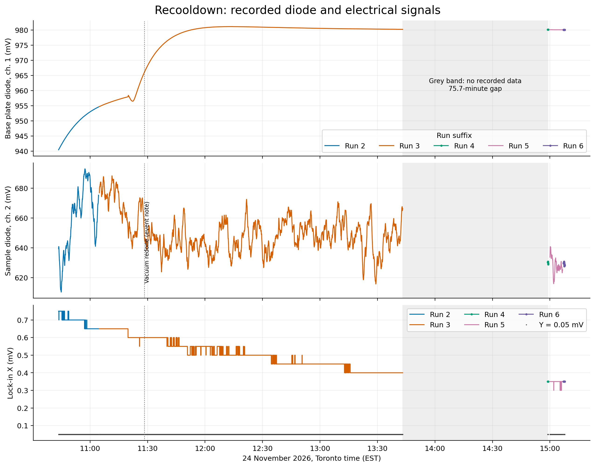
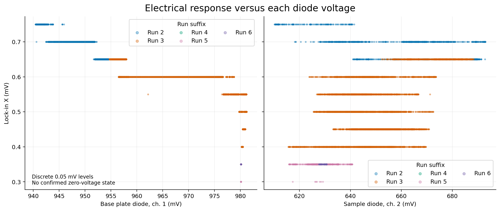
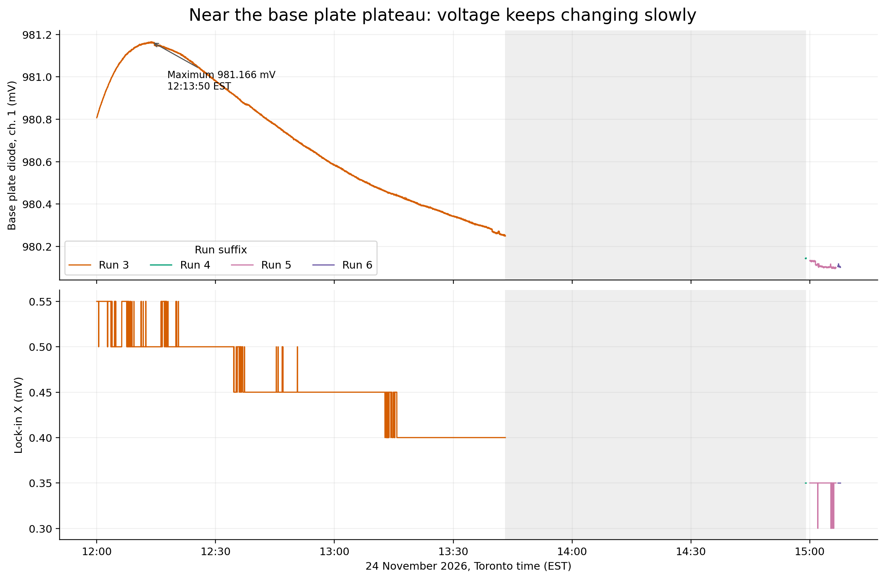
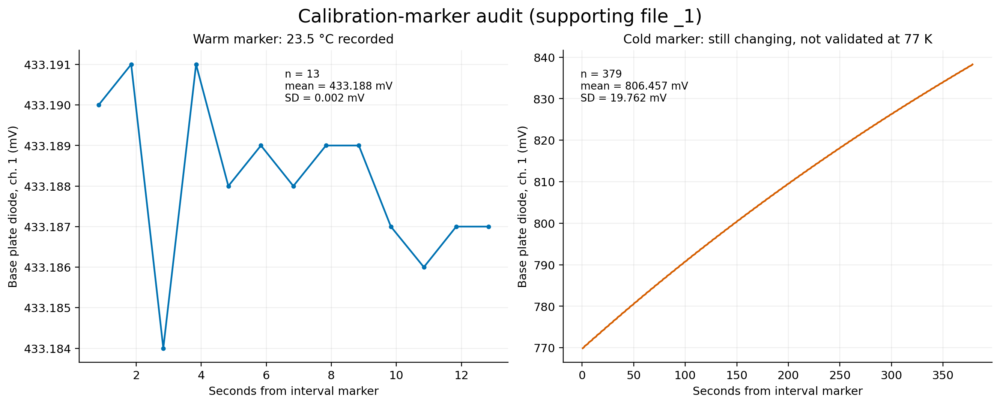
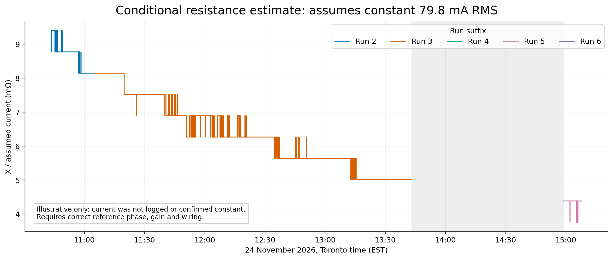
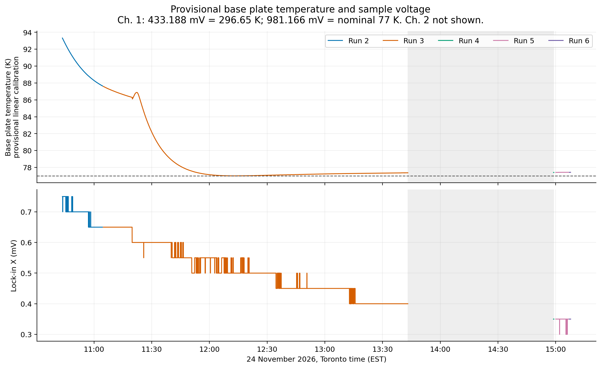
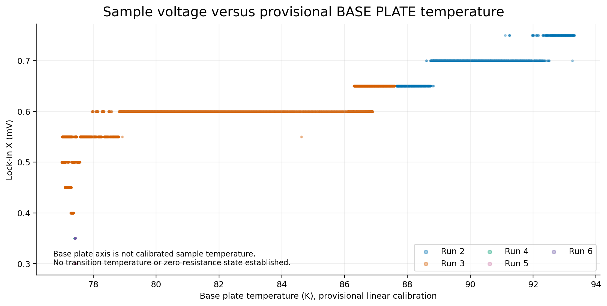

Runs _2–_6, 24 November 2026. All graph times are Toronto EST (UTC−5).
11,201 rows span 4.40 hours of wall time, with 3.11 hours inside the recorded segments. 11,197 rows contain complete electrical measurements with quality=ok.
The logger now labels base_plate (ch1) and sample (ch2) explicitly. A separate provisional sample curve uses user-reported 28.08 mV at assumed 23.5 °C and approximately 619 mV at nominal 77 K. These references are approximate, not independently verified. The existing figures below use the base plate curve only.
Both-sensor temperature export · Profile, assumptions and quality counts
Only 133 of the 11,201 archived sample readings lie inside the provisional voltage range; 11,068 are flagged outside_reference_range with blank derived temperatures and preserved raw voltages. No below-77 K temperature is inferred by extrapolating those readings.
Supporting file _1 has a 13-reading channel-1 (base plate) warm interval at 23.5 °C, mean 433.188154 mV and sample SD 0.001994 mV. Its cold markers enclose 379 readings rising from 769.892 to 838.257 mV (mean 806.457 mV, SD 19.762 mV), not a plateau. Earlier historical 22.2 °C and invalidated 26.2 °C references are not substituted. Even the later ~980.1 mV plateau is not automatically assigned 77 K without physical confirmation.
At the user’s request, the highest recorded base plate voltage, 981.166 mV, is assigned nominal 77 K. With the warm point 433.188154 mV at 296.65 K, the linear curve is V_mV = 1173.263856 − 2.494777356 × T_K. Channel 1 spans approximately 93.32 K initially to a minimum of 77 K, ending at 77.43 K. This is a provisional base plate temperature, not a calibrated sample temperature. The approximate remembered 990 mV is not substituted for the recorded 981.166 mV.
Data with provisional base plate temperatures · Calibration coefficients, references and limitations
| Run | Rows | Span (min) | Start EST | End EST | Metadata status |
|---|---|---|---|---|---|
| _2 | 1,252 | 20.87 | 10:43:33 | 11:04:25 | error |
| _3 | 9,500 | 158.32 | 11:04:49 | 13:43:08 | error |
| _4 | 12 | 0.18 | 14:58:53 | 14:59:04 | error |
| _5 | 397 | 6.60 | 15:00:00 | 15:06:36 | error |
| _6 | 40 | 0.65 | 15:07:04 | 15:07:43 | running |

Runs _2–_6, with actual elapsed gaps. Channel 1 = base plate; channel 2 = sample (user confirmed). Diodes are raw mV, not calibrated temperatures. Four partial electrical rows are excluded from X/Y traces.

The horizontal axes deliberately remain diode voltage. Channel 1 is the base plate and channel 2 is the sample (user confirmed). Cold calibration and current are not established by these files.

After the base plate diode peaks near 981.166 mV, it declines slightly; electrical voltage continues falling. This is not a resolved superconducting transition or a calibrated heating curve.

The warm interval is short but stable. During the marked cold interval the diode changes by 68.365 mV; it cannot be accepted as a stable 77 K point from these records.

Assuming the earlier reported 79.8 mA remained constant, initial/final median X correspond to about 9.40/4.39 mΩ. This is explicitly conditional, not a measured resistance calibration.

User-requested provisional calibration of channel 1 only. The highest recorded voltage is assigned nominal 77 K. Gaps remain blank; this is not the sample temperature.

Electrical voltage versus channel-1 base plate temperature; the separate provisional sample estimates are not used on this base plate axis. The two-point linear model is provisional, and actual current was not logged.
Raw inputs remain unchanged. All _2–_6 rows are retained in the merged CSV with source filename and row. Electrical plots use only complete quality=ok rows. Diode plots retain the valid diode values in partial error rows. No smoothing, imputation or gap interpolation is applied. Figures 1–5 preserve raw voltage axes; figures 6–7 apply the separately documented provisional base plate calibration only. _1 is used only for the supporting reference audit; startup, simulation and earlier setup measurements are excluded from the main graphs. No recorded warming branch is manufactured.
To obtain R(T) for the sample (channel 2), establish actual current versus time, phase/gain/wiring, and independent warm/cold reference temperatures for each sensor. With only two reference temperatures, a three-parameter logarithmic calibration requires one independently fixed coefficient.
Files: Merged data with provenance · Run summary · Numerical audit, environment and source hashes. Sources: recooldown.zip supplied by user (SHA256 ab2abb4d30cbfaa118ea09e312bfc87aa3ceb167b2e27c1b9b460fd617b4c998). Reproduce from project root: python3 analysis/analyze_recooldown.py.